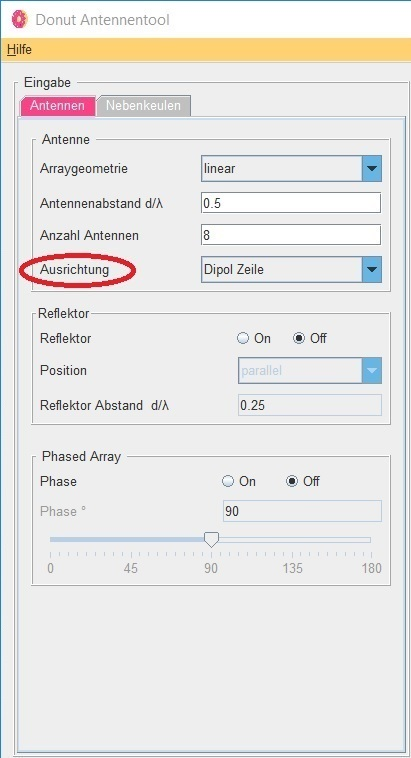

<p style="text-align: center;"><span style="font-family: Tahoma,Geneva,sans-serif;"><strong><span style="color: rgb(51, 51, 151); font-size: 36px;">Donut Tutorial</span></strong><span style="color: rgb(51, 51, 151); font-size: 36px;">&nbsp;</span></span>
</p>
<hr>
<p style="text-align: center;"><span style="font-family: Tahoma,Geneva,sans-serif;">Ausrichtung</span></p>

<table style="width: 100%;">
	<tbody>
		<tr>
			<td style="width: 50.0000%;"><p style="text-align: center;"><p style="text-align: center;">
				<br>
			</td>
			<td style="width: 50.0000%;"><span style="font-family: Tahoma,Geneva,sans-serif;">Um eine andere Ausrichtung zu w&auml;hlen, stehen drei Auswahlen zur Verf&uuml;gung.&nbsp;</span>
				<br>
				<ul>
				<li><span style="font-family: Tahoma,Geneva,sans-serif;">Dipol Zeile</span>
				<li><span style="font-family: Tahoma,Geneva,sans-serif;">Hertzscher Dipol Linie</span>
				<li><span style="font-family: Tahoma,Geneva,sans-serif;">Lambda/2 Dipol Linie</span>
				</ul>
				<br><span style="font-family: Tahoma,Geneva,sans-serif;">Klicken Sie auf weiter, um Infos zu den einzelnen Auswahlen zu erhalten</span>
				<br>
			</td>
		</tr>
	</tbody>
</table>


<form>
<!DOCTYPE html>
<html>
<head>
<style>
.button {
    background-color: #4CAF50;
    border: none;
    color: white;
    padding: 15px 25px;
    text-align: center;
    font-size: 16px;
    cursor: pointer;
}

.button:hover {
    background-color: green;
}
</style>
</head>
<center>
<body>
<button type="button" onClick="self.location.href='4_Antennen_Anzahl_Antennen.html'" class="button" >Zur&uuml;ck</button>

<button type="button" onClick="self.location.href='5_1_Antennen_Ausrichtung.html'" class="button" >Weiter</button>

</center>
</body>
</html>
